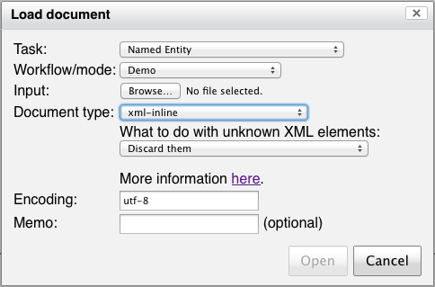
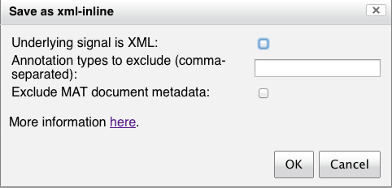

All the MAT tools are flexibly configured to use one of an
extensible set of readers and writers. Currently, there are three
reader/writer types: raw, mat-json, and xml-inline. There is also
a fake-xml-inline reader. These types can be passed to tools like
MATEngine. You may also find that
your task has defined additional readers and writers; consult your
task maintainer for details about these.
For reading, a file of this type is treated as all signal. For
write, the signal is extracted from the relevant annotated
document. This reader/writer has no additional options. The
default encoding for this reader/writer is ASCII.
It is very important that you know what the encoding of
your raw document is, and not just for MAT; any tool that reads
raw text documents needs to know. If you're not sure, ask the
person who provided the documents to you.
This type designates the MAT-specific
JSON document format (current version is 2). This
reader/writer has no additional options. The only available
encoding is UTF-8.
This type designates version
1 of the MAT-specific JSON document format. This type is
available only as a writer (since mat-json reads both version 1
and version 2). It has no additional options. The only available
encoding is UTF-8.
In many circumstances, annotators will want to work with inline XML as a serialization of documents containing span annotations, either for compatibility with text editors, or interoperability with other tools or existing reference corpora, or for ease of textual visual inspection. MAT attempts to make this easy to do, but it's important to understand how MAT thinks about the relationship between inline XML and annotations.
You might encounter three types of documents which are said to be "XML":
You can also write valid XML documents using the xml-inline
writer.
The XML inline reader accepts valid XML (and only valid XML). The
default encoding is UTF-8.
When you use this reader, you may encounter XML elements which
don't correspond to any known annotation type in your task. There
are three options you have for how to handle this situation:
The unknown elements can be treated as annotations. For instance, you may have a file which contains structural corpus information, e.g., document boundaries such as <DOC>....</DOC>. You might wish these to be preserved as annotations, either via the UI, or on the command line, via the --xml_translate_all option. Although we make this option available, if you really want these annotations, you should declare these elements to be annotation types in your task. (Note, too, that in this particular example, MAT doesn't really "know" how to treat the material within each <DOC>...</DOC> interval as a separate document; so if you work with such corpora extensively, we recommend segmenting these multi-document corpus files into individual document files.)
The underlying signal can be treated as XML, either via the UI, or on the command line, via the --xml_input_is_overlay option. This final option is quite subtle. MAT's view of XML is that, by default, an XML document is a serialization of an annotated document: the elements are really ways of indicating the location of annotations, and the document signal is the unserialized XML character data. So "&" in your XML document is the serialization of the ampersand character - this is what any well-behaved XML parser will give you. There's another way of looking at this, namely that the XML document is a set of annotations overlaid on another XML document. In other words, the signal of the document is what you get when you subtract the XML elements which correspond to annotation types in your task. This latter interpretation corresponds to your final option. So in this latter interpretation, "&" and other entities will be retained in the signal, as will all elements which don't correspond to annotation types. If you choose this final option, you're really committing yourself to the subtracted signal being well-formed XML, so be careful. In general, this final option is seldom, if ever, what you want.The reader implements these alternatives via the following
options:
| Command line option |
XML attribute |
Value |
Description |
|---|---|---|---|
| --xml_input_is_overlay |
xml_input_is_overlay |
"yes" (XML) |
Normally, the XML reader will
digest elements with the same name as a known annotation in
the given task, and discard all other XML markup. If this
flag is specified, the input XML will be treated as a mix of
task-relevant annotations and underlying XML, and the
extracted signal will be a well-formed XML file. Ignored if
--xml_translate_all is specified. |
| --xml_translate_all |
xml_translate_all |
"yes" (XML) |
Normally, the XML reader will
digest elements with the same name as a known annotation in
the given task, and discard all other XML markup. If this
flag is specified, all elements will be converted to
annotations; if a task is provided and the element label
doesn't correspond to an annotation label, a new annotation
type will be constructed. If no task is provided (MATScore, MATReport and MATTransducer all can be used without tasks), the reader will set this flag internally. |
The writer accepts the following options:
| Command line option |
XML attribute |
Value |
Description |
|---|---|---|---|
| --signal_is_xml |
signal_is_xml |
"yes" (XML) |
Normally, the XML writer
assumes that the underlying signal is not XML. If this flag
is present, the underlying signal will be treated as a
well-formed XML file when the output file is rendered. If
the input file type is also 'xml-inline', use the
--xml_input_is_overlay flag to control this setting instead. |
| --xml_output_tag_exclusions
<tag,tag,...> |
xml_output_tag_exclusions |
A comma-delimited list of annotation labels to exclude from the XML output. | |
| --xml_output_exclude_metadata |
xml_output_exclude_metadata |
"yes" (XML) | Normally, the XML writer
saves the document metadata inside an XML comment, so it can
be read back in by the XML reader, and also renders the
annotation and attribute type information as zero-length XML
tags. This flag causes this metadata not to be written. |
Every attempt is made to make XML read/write lossless with
respect to the underlying document. However, this is not always
possible, because MAT documents use standoff annotations, and any
crossing dependencies will end up generating malformed XML
(e.g., <a>text<b>text</a>text</b>). You
can use the --xml_output_tag_exclusions option to discard the
offending annotation types.
When used as a writer, xml-inline will dump the annotation and
attribute type information (unless --xml_output_exclude_metadata
is used). This type information enables all attribute types to be
read correctly when xml-inline is used as a reader, whether or not
the same annotation task is used. This includes set and list types
and annotation-valued attributes. When xml-inline is used as a
reader, it looks for the appropriate representation of these
types, and if you've provided a task, you can interpret these
values correctly even if the document was not produced with the
MAT xml-inline writer. We document these values here for
completeness; you're welcome to try writing such a document with
another tool and seeing if it MAT can read it, but we're not
guaranteeing that they'll work.
The xml-inline reader/writer is available as an option in the MAT
UI when you load and save documents in file mode.
When you select "xml-inline" as your load option in the MAT UI,
the "Load document" dialog looks like this:

The menu contains the three options described above. The link
will bring you to this page, in a new window or tab.
When you select "xml-inline" as from the "Save" menu in your
document window, you'll see the following popup:

The "Underlying signal is XML" checkbox corresponds to the
--signal_is_xml option; the "Annotation types to exclude" typein
window corresponds to the --xml_output_tag_exclusions option; and
the "Exclude MAT document metadata" checkbox corresponds to the
--xml_output_exclude_metadata option. The link will bring you to
this page, in a new window or tab.
We commonly encounter data which is XML-"like", which simply has
inline SGML-ish markup in a raw document, like so:
The <ORGANIZATION>Smith & Jones Corporation</ORGANIZATION> has announced its IPO.
In these documents, XML-significant characters "&<>"
are not properly escaped, and there is no toplevel XML tag
surrounding the entire document. The fake-xml-inline reader will
search for patterns of the form <...>, and figures out
whether the "tag" is a opening, closing, or zero-length tag. It
translates attribute-value pairs of the SGML-ish opening tags into
annotation attribute-value pairs. If it finds an attribute-value
string which can't be parsed using XML-ish rules, it will treat
the enclosing "tag" as part of the signal. The reader recognizes
nested "tag"s correctly. Because this reader is targeted at
extracting XML-ish markup from a raw document, there's no option
equivalent to --xml_input_is_overlay, and unlike the xml-inline
reader, all annotations are converted, not just the known ones.
The default encoding for this reader is UTF-8. There is no
corresponding writer.
If you have an idiosyncratic document format you want to use,
It's not too difficult to define
your
own reader/writer.